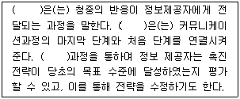
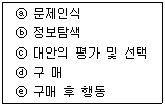
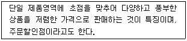
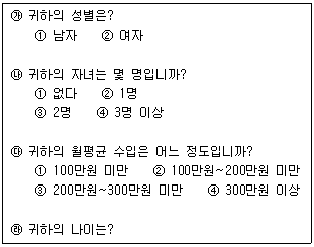
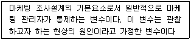
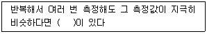
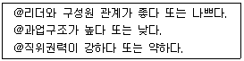

텔레마케팅관리사 (2011-08-21 기출문제)
1과목: 판매관리
1. 마케팅 믹스에서 4P에 해당하지 않는 것은?
- 유 통
- 고 객
- 가 격
- 제 품
(정답률: 81%)

2. 아웃바운드 텔레마케팅의 업무영역 중 고객니즈의 자극영역은?
- 판매촉진
- 벤치마킹
- 시장조사
- 상담창구
(정답률: 58%)
3. 일반적인 소비재의 유통경로를 바르게 나열한 것은?
- 생산자 → 소매상 → 도매상 → 소비자
- 생산자 → 도매상 → 소매상 → 소비자
- 도매상 → 생산자 → 소매상 → 소비자
- 도매상 → 소매상 → 생산자 → 소비자
(정답률: 97%)
4. 텔레마케팅 시장현황의 거시적 환경 중에서 금융, 보험, 여행, 레저 등 서비스산업의 발달로 소득 증가에 따른 지출내용이 다양화되는 환경은?
- 인구 통계적 환경
- 경제적 환경
- 기술적 환경
- 사회문화적 환경
(정답률: 53%)
5. 고객과의 커뮤니케이션에 초점을 맞춘 분석으로 고객과 기업간의 접촉, 횟수, 금액사용 등의 고객분석은?
- 고객평생가치분석
- RFM 분석
- 손익분기분석
- ROI(Return On Investment) 분석
(정답률: 62%)
6. 현대 마케팅의 특징으로 가장 적당한 것은?
- 생산중심 마케팅
- 고압적 마케팅
- 고객지향적 마케팅
- 기업중심적 마케팅
(정답률: 100%)
7. 데이터베이스 마케팅을 근간으로 하는 마케팅이 아닌 것은?
- 프리퀀시(Frequency)마케팅
- 원투원(One to One)마케팅
- 릴레이션쉽(Relation Ship)마케팅
- 니치(Niche)마케팅
(정답률: 28%)
8. 인구통계학적 변수가 아닌 것은?
- 직 업
- 학 력
- 상표애호도
- 종 교
(정답률: 91%)
9. 다음 ( )안에 공통적으로 들어갈 용어는?

- 피드백
- 해독화
- 부호화
- 노이즈
(정답률: 91%)
10. 가격결정에 영향을 미치는 외부요인 중 시장 참가자가 다수여서 수요자 상호간, 공급자 상호간 그리고 수요자와 공급자간의 삼면적(三面的)인 경쟁이 이루어지는 시장을 의미하는 것은?
- 완전시장경제
- 독점적 경쟁시장
- 과점시장
- 독점시장
(정답률: 65%)
11. 데이터 마이닝의 적용범위로 가장 거리가 먼 것은?
- 고객관리
- 고객유치
- 고객감정
- 고객세분화
(정답률: 95%)
12. 마케팅 전략의 수립에 있어서 직접적으로 관련되는 당사자인 3C에 속하지 않는 것은?
- Customer
- Company
- Contents
- Competitor
(정답률: 69%)
13. 시장 세분화의 기준에 대한 설명으로 틀린 것은?
- 지리적 세분화 - 시장을 국가, 지역, 군, 도시, 인근 등의 단위로 분할하는 것이다.
- 인구통계적 세분화 - 연령, 성별, 가족 수, 소득, 직업, 학력, 종교, 인종, 국적 등의 변수들에 기초하여 시장을 여러 집단으로 분할하는 것이다.
- 심리분석적 세분화 - 사용량, 라이프스타일, 개성 특성 등에 기초하여 상이한 집단으로 분할한다.
- 행위적 세분화 - 구매자들은 각자의 제품에 대한 지식, 태도, 용도, 반응 등에 기초해서 집단화된다.
(정답률: 42%)
14. 제품/시장 확장 그리드(Product/Market Expansion Grid)에 관한 설명으로 틀린 것은?
- 제품개발(Product development)은 기존시장을 대상으로 수정된, 혹은 새로운 제품을 가공하는 것이다.
- 다각화(Diversification)는 기존제품과 기존시장 밖에서 새로운 사업을 시작하거나 매입하는 것이다.
- 시장개발(Market development)은 시장을 개발하여 기존제품을 판매하는 것이다.
- 시장침투(Market penetration)는 기존제품을 변경하여 신규고객에게 더 많이 판매하는 것이다.
(정답률: 43%)
15. 인바운드 텔레마케팅 활용분야에 해당하는 것은?
- 가맹고객 획득
- 고객의 각종 주문이나 문의 접수
- 대금회수, 계약 갱신
- 시장조사
(정답률: 91%)
16. 소비자의 구매 의사 결정과정이 올바른 것은?

- ⓐ → ⓑ → ⓒ → ⓓ → ⓔ
- ⓑ → ⓐ → ⓒ → ⓓ → ⓔ
- ⓐ → ⓒ → ⓑ → ⓓ → ⓔ
- ⓒ → ⓑ → ⓓ → ⓐ → ⓔ
(정답률: 100%)
17. 효과적인 시장세분화의 요건으로 틀린 것은?
- 측정 가능성
- 규 모
- 세분시장간의 동질성
- 접근 가능성
(정답률: 12%)
18. 고객 행동에 따른 구매가능자 중 자사의 제품서비스에 대하여 필요성을 느끼지 못하거나 구매할 능력이 없다고 확실하게 판단되는 자는?
- 비자격 잠재자
- 최초 구매자
- 구매 용의자
- 구매 가능자
(정답률: 95%)
19. 데이터베이스 마케팅의 효과에 대한 설명이 잘못된 것은?
- 고객에게 최적의 구매환경을 제공함으로써 고객의 생애 가치를 증대시킨다.
- 고객별 거래량 분석을 통하여 수익공헌도가 높은 고객을 파악할 수 있다.
- 체계적인 고객관리를 통하여 고객의 이탈을 막고 고객 유지를 할 수 있다.
- 고객을 동일한 집단으로 대우하여 최적의 서비스를 제공한다.
(정답률: 93%)
20. 데이터베이스 마케팅에 대한 설명 중 옳지 않은 것은?
- 고객데이터를 이용하여 고객과의 1:1 관계를 구축할 수 있다.
- 컴퓨터의 활용가치가 높다.
- 기존고객의 지속적인 관리를 위한 비용이 신규고객 확보를 위한 비용보다 높다는 단점이 있다.
- 각종 데이터를 수집, 분류, 응용, 분석하여 마케팅 전략을 수립하는 데 효과적이다.
(정답률: 78%)
21. 데이터베이스 설계시 고려되어야 할 사항이 아닌 것은?
- 장기적인 비전
- 통합성
- 유연성
- 즉시성
(정답률: 77%)
22. 제품을 핵심제품, 유형제품, 포괄제품의 3단계로 구분한 사람은?
- 아담 스미스
- 케인즈
- 피터 드러커
- 코틀러
(정답률: 80%)
23. STP 전략의 절차를 바르게 나열한 것은?
- 시장세분화 → 표적시장선정 → 포지셔닝
- 표적시장선정 → 시장세분화 → 포지셔닝
- 포지셔닝 → 표적시장선정 → 시장세분화
- 시장세분화 → 포지셔닝 → 표적시장선정
(정답률: 61%)
24. 다음 중 마케팅 정보시스템에 대한 설명으로 틀린 것은?
- 마케팅 정보시스템은 마케팅 관리자의 효율적인 마케팅 전략 수립에 도움을 준다.
- 특수한 상황에 직면하게 되는 경우 마케팅 조사시스템이 이용된다.
- 마케팅 인텔리전스 시스템은 특수한 상황에 따라 조사하게 되는 외부환경조사 마케팅 정보시스템이다.
- 분석적 마케팅 시스템은 마케팅자료를 분석하여 최종적인 결론에 도달한다.
(정답률: 64%)
25. 다음이 설명하고 있는 점포형태는?

- 카테고리 킬러
- 백화점
- 슈퍼마켓
- 할인점
(정답률: 53%)
2과목: 시장조사
26. 시장조사 결과보고서의 작성 목적과 가장 거리가 먼 것은?
- 조사자와 조사대상자간의 의사소통
- 통제수단
- 타당성 검증
- 결과활용
(정답률: 46%)
27. 인과조사에 대한 설명으로 옳지 않은 것은?
- 독립변수와 종속변수간에는 인과관계가 성립한다.
- 특정 현상의 원인과 결과를 규명하기 위한 방법이다.
- 사용이 용이하여 널리 사용되는 방법이다.
- 변화의 시간적 우선순위, 외생변수 통제 등의 조건이 갖추어져야 인과관계 조사가 가능하다.
(정답률: 57%)
28. 사전검사에 관한 설명으로 틀린 것은?
- 사전검사를 통해 질문들이 갖는 문제점을 발견할 수 있다.
- 사전검사는 반드시 많은 수의 응답자를 상대로 실시할 필요가 없다.
- 질문지의 초안이 일단 작성된 후 사전검사를 한다.
- 사전검사의 방법은 본 조사에서 사용하고자 하는 방법과 동일할 필요는 없다.
(정답률: 66%)
29. 불포함 오류에 관한 설명으로 옳은 것은?
- 원칙적으로 표본조사를 할 때에 표본체계가 완전하지 않아서 생기는 오류
- 표본추출과정에서 선정된 표본 중에서 응답을 얻어내지 못하여 생기는 오류
- 면접이나 관찰과정에서 응답자나 조사자 자체의 특성에서 생기는 오류
- 정확한 응답이나 행동을 한 결과를 조사자가 잘못 기록하거나, 기록된 설문지나 면접지가 분석을 위하여 처리되는 과정에서 틀려지는 오류
(정답률: 56%)
30. 효과적인 전화조사를 위하여 고려하여야 할 사항과 가장 거리가 먼 것은?
- 응답자가 불편을 느끼지 않는 시간대를 선택한다.
- 전화조사시 질문은 짧고 단순하게 구성하고 질문의 수를 줄인다.
- 전화조사는 중간에 전화가 끊기거나 소음 등에 방해를 받지 않도록 한다.
- 전화 조사시에는 경제성을 고려하여 다양한 주제에 대하여 많은 내용을 조사하도록 한다.
(정답률: 75%)
31. 다음 중 각 척도에 대한 설명으로 틀린 것은?
- 서스톤 척도 - 문항 중심의 척도화 방법으로 연구자가 문항들을 심리적 연구선상에 배열하려는 목적을 가진 방법이다.
- 리커트 척도 - 척도를 구성하는 여러 문항들이 단일한 차원을 측정하고 있는 방법이다.
- 거트만 척도 - 다양한 개념상에서 개인들의 상대적 위치 혹은 서열을 파악하고 측정하는 데 사용하는 방법이다.
- 어의차이 척도 - 다차원 척도로서 응답자가 특정 개념을 어떻게 이해하고 있는지와 같은 주관적인 의미를 측정하는 방법이다.
(정답률: 40%)
32. 시장조사시 사용되는 용어에 대한 설명으로 옳지 않은 것은?
- 모집단 - 표본이 두 개 이상 모인 집단을 말한다.
- 표본 - 모집단의 일부로서 대표성을 갖는다.
- 전수조사 - 모집단 전체를 조사한다.
- 표본조사 - 모집단의 일부만을 뽑아서 하는 조사이다.
(정답률: 45%)
33. 조사 의뢰자인 마케팅 관리자가 조사보고서를 통해서 얻은 자료와 정보에 대한 가치를 판단하는 데 수익 및 비용을 구체적인 숫자로 표현하여 확률적인 의사결정을 하는 분석법은?
- 직관적 가치 분석법
- 베이지안 분석법
- 손익분기 분석법
- 시계열 분석법
(정답률: 15%)
34. 조사방법 중 횡단조사에 대한 설명으로 틀린 것은?
- 표본을 활용한 조사기법
- 설문지 활용 특정 시점의 상황 파악
- 한 번의 측정을 통한 측정치 비교
- 동일한 표본을 대상으로 조사
(정답률: 29%)
35. 마케팅 조사에 대한 설명으로 틀린 것은?
- 주관적이고 체계적인 방법으로 자료를 수집한다.
- 문제 해결을 위해서 공식적으로 이루어진다.
- 의사결정에 사용될 수 있도록 적기에 이루어져야 한다.
- 과학적 방법론을 적용해야 한다.
(정답률: 72%)
36. 다음 중 시장조사의 역할과 가장 거리가 먼 것은?
- 불확실성과 위험성 극대화
- 문제해결을 위한 조직적 탐색
- 고객의 심리적, 행동적인 특성 간파를 통한 고객만족
- 타당성과 신뢰성 높은 정보의 획득 및 의사결정 능력 제고
(정답률: 96%)
37. 다음 중 마케팅 조사의 진행과정으로 올바른 것은?
- 조사계획 단계 → 예비 단계 → 자료수집 단계 → 분석 및 대안제시 단계
- 자료수집 단계 → 예비 단계 → 조사계획 단계 → 분석 및 대안제시 단계
- 가설제시 단계 → 조사계획 단계 → 자료수집 단계 → 분석 및 대안제시 단계
- 예비 단계 → 조사계획 단계 → 자료수집 단계 → 분석 및 대안제시 단계
(정답률: 50%)
38. 신뢰도의 구체적 평가방법에 해당하지 않는 것은?
- 반분법
- 재조사법
- 내적 일관성법
- 구성체 신뢰도법
(정답률: 17%)
39. 일반적으로 설문지 작성시 가능한 후반부에 두어야 하는 것은?
- 도입적 질문
- 응답자 인적사항
- 응답자 파악질문
- 세부적인 질문
(정답률: 39%)
40. 우편조사의 응답률에 영향을 미치는 요인과 가장 거리가 먼 것은?
- 응답집단의 동질성
- 응답자의 지역적 범위
- 질문지의 양식 및 우송방법
- 조사주관기관 및 지원 단체의 성격
(정답률: 60%)
41. 다음 중 척도법의 선택으로 가장 적합한 것은?
- 성별을 분류하기 우해 비율척도를 선택했다.
- 상품의 선호도 순위를 알아보기 우해서 비율척도를 선택했다.
- 시장세분구역 분류를 하기 위해 등간척도를 선택했다.
- 지구온난화를 조사하기 위해 등간척도를 선택했다.
(정답률: 40%)
42. 조사원의 통제가 가능하고, 응답률이 높은 편이고, 시간과 비용이 적게 드는 조사는?
- 우편조사
- 방문조사
- 전화조사
- 간접조사
(정답률: 70%)
43. 다음에 제시되어 있는 설문지 문항 중 잘못 작성된 것은?

- 20세 미만
- 20세~30세
- 30세~40세
- 40세 이상
(정답률: 42%)
44. 다음이 설명하고 있는 것은?

- 결과변수
- 종속변수
- 외생변수
- 독립변수
(정답률: 58%)
45. 일반적인 자료수집방법의 선택기준이 아닌 것은?
- 필요한 자료수집의 다양성
- 수집된 자료의 객관성과 정확성
- 필요한 자료의 공개와 독창성
- 자료수집과정의 신속성과 비용
(정답률: 84%)
46. 다음 ( )안에 들어갈 알맞은 용어는?

- 타당성
- 신뢰성
- 민감성
- 선별성
(정답률: 63%)
47. 조사대상이 되는 사람들의 태도, 감정, 동기, 욕망 등을 알아보기 위하여 모호한 자극을 제시한 후, 이에 대한 응답을 얻어 연구에 필요한 자료를 수집하는 방법을 무엇이라고 하는가?
- 사회성 측정법
- 투사법
- 유도법
- 실험법
(정답률: 32%)
48. 의사소통수단에 의한 면접법의 분류에 해당되지 않는 것은?
- 대인면접법
- 전화면접법
- 우편면접법
- 역할면접법
(정답률: 54%)
49. 당면한 조사문제 이외의 다른 조사상황에서의 목적을 위해 수집된 자료인 2차 자료의 장점이 아닌 것은?
- 저렴한 비용
- 시간 절약
- 수집과정의 용이성
- 수집목적의 상이성
(정답률: 64%)
50. 다음 중 표본추출을 할 때 가장 먼저 해야 할 사항은?
- 모집단 규정
- 표본크기 산출
- 표본체계 확인
- 표본할당
(정답률: 71%)
3과목: 텔레마케팅관리
51. 인바운드 텔레마케팅 도입시 점검사항이 아닌 것은?
- 고객정보를 처리할 수 있는 컴퓨터 및 소프트웨어 등의 활용수준은 도입 후 점검해도 된다. $
- 인바운드 텔레마케팅 우수기업 등을 사전에 방문하여 벤치마킹할 필요성이 있다.
- 고객에게 제공할 정보, 스크립트 작성, 텔레마케터의 근무방법 등 텔레마케팅을 전개하는 방법 등을 점검한다.
- 고객의 문의에 보다 객관적이고 합리적인 답변을 하기 위해 일종의 질의응답 매뉴얼인 Q&A를 준비한다.
(정답률: 83%)
52. 텔레마케팅 아웃소싱 업체 선정시 유의할 사항이 아닌 것은?
- 콜센터 아웃소싱 업체가 인바운드 텔레마케팅 성향이 강한지, 아웃바운드 텔레마케팅 성향이 강한지 해당 업체의 특성을 고려해야 한다.
- 아웃소싱 업체의 고객 데이터베이스 관리의 신뢰성 정도를 반드시 점검해야 한다.
- 아웃소싱 업체의 상담원의 자질이 어떠한지를 평가하여야 하며, 편차가 심할 경우 업체선정을 고려해야 한다.
- 규모가 큰 아웃소싱 업체를 선정하는 것이 가장 효율적이고 콜 생산성을 높일 수 있다.
(정답률: 84%)
53. 콜 예측량 모델링을 위한 콜센터 지표의 설명으로 틀린 것은?
- 평균통화시간(초) - 상담원이 고객 한 사람과 통화하기 위해 준비 단계부터 상담종료까지 소요되는 평균적인 시간을 말한다.
- 평균 마무리 처리시간(초) - 평균통화시간 이후 상담내용을 별도로 마무리 처리하는 데 소요되는 평균적인 시간을 말한다.
- 평균통화시간(초) - 평균통화시간과 평균 마무리 처리시간을 합한 것이다.
- 평균응대속도(초) - 고객이 상담원과 대화 이전에 대기하고 있는 총 시간을 응답한 총통화 수로 나눈 값을 말한다.
(정답률: 35%)
54. 막스 베버(Max Weber)가 주장한 이상적인 관료조직(Bureaucracy)의 특징을 올바르게 설명한 것은?
- 과업의 성과가 일정하도록 다양한 규칙이 있어야 한다.
- 경영자는 개인적인 방법과 생각으로 조직을 이끌어야 한다.
- 조직구성원의 채용과 승진은 경영자의 지식과 경험에 기초한다.
- 조직의 각 부서 지휘는 전문가에 의해 이루어져야 한다.
(정답률: 50%)
55. 직장 내 훈련(On-the-Job Training : OJT)에 관한 설명으로 옳지 않은 것은?
- 많은 종업원에게 통일된 훈련을 시킬 수 있다.
- 종업원의 개인적 능력에 따른 훈련이 가능하다.
- 상사와 동료 간에 이해와 협조 정신을 강화시킨다.
- 고급기기 등의 실습이 필요한 경우 적용이 곤란하다.
(정답률: 50%)
56. 아웃바운드 텔레마케팅의 설명으로 적합하지 않은 것은?
- 고객리스트는 반응률을 결정하는 중요 요소이다.
- 고객 반응을 유도할 수 있는 적합한 제안이 필요하다.
- 기존 고객이 이탈하지 않도록 하기 위한 적극적인 고객관리에 유효하다.
- 콜 예측을 통한 서비스레벨을 효과적으로 관리하는 것이 중요하다.
(정답률: 63%)
57. 텔레마케터에 대한 코칭의 목적이 아닌 것은?
- 목표부여와 관리
- 감독일원화 및 전문화의 원칙 교육
- 상담원의 역할 인식과 업무 집중화
- 집중적인 학습과 자기개발
(정답률: 66%)
58. 다음과 같은 요인들의 상호작용을 통해서 나타날 수 있는 리더십 이론은?

- 리더십 특성이론
- 리더십 관계이론
- 리더십 상황이론
- 리더-구성원 교환이론
(정답률: 44%)
59. 리더십에 대한 설명으로 바람직하지 않은 것은?
- 그린리프는 새로운 리더십으로 서번트 리더십을 제시하였다.
- 두드러진 리더십의 특징은 조직구성원들의 행동을 통해 확인 할 수 있다.
- 리더는 자신의 약점을 보완하기 위해 70%의 시간과 노력을 투자해야 한다.
- 리더십은 리더의 특성, 상황적 특성, 직원의 특성에 의한 함수관계에 따라 발휘되어야 한다.
(정답률: 79%)
60. 콜센터 생산성 평가를 위한 핵심요소로 적절하지 않은 것은?
- 매출#이익률
- 모니터링 횟수
- 실시간 성과분석
- 고객데이터 생산성
(정답률: 37%)
61. 텔레마케터 지도(Coaching)시 지켜야 할 올바른 태도가 아닌 것은?
- 본격적인 지도 전에 텔레마케터와 친밀감을 형성한다.
- 장점에 대한 칭찬을 곁들이면서 문제점에 대한 지적을 하고 동의를 구한다.
- 문제 지적 사항에 대해 상담원의 답변을 들을 필요는 없다.
- 문제점의 지적과 함께 개선 방안에 대해 제시하거나 토의 한다.
(정답률: 81%)
62. 콜센터 성과변수를 고객성과와 업무성과로 구분할 때 조직 내부의 업무수행과정에서 나타나는 업무성과에 해당하는 것은?
- 고객 유지율 확립
- 고객 만족도 향상
- 고객 모니터링 기능 강화
- 고객획득률 증가
(정답률: 38%)
63. 리더십 이론이 발전되어 온 순서로 올바른 것은?
- 특성이론 → 행동이론 → 변혁적 리더십이론 → 상황이론
- 행동이론 → 특성이론 → 상황이론 → 변혁적 리더십이론
- 변혁적 리더십이론 → 상황이론 → 특성이론 → 행동이론
- 특성이론 → 행동이론 → 상황이론 → 변혁적 리더십이론
(정답률: 53%)
64. 조직목표를 달성하기 위해 구성원의 역량을 개발하는 조직 활동인 인적자원관리에 관한 설명으로 옳은 것은?
- 인적자원 활용 활동은 인적자원의 수요와 공급분석, 직무분석, 핵심역량의 파악 등을 통한 인재상의 설정 등이 포함된다.
- 인적자원 육성 활동은 인적자원의 모집과 선발 같은 확보활동, 교육 훈련과 같은 개발활동, 그리고 평가활동 등이 포함된다.
- 인적자원 계획 활동은 직접적인 임금과 간접적인 복지와 같은 보상활동, 생산성 향상 활동, 그리고 유지활동 등이 포함된다.
- 인적자원 향상 활동은 노동시간을 비롯한 작업조건 관리와 안전보건 관리를 통해 노동력의 재생산과 안정적 유지가 포함된다.
(정답률: 75%)
65. 콜센터의 서비스 레벨(Service Level)에 대한 설명으로 옳지 않은 것은?
- 서비스 레벨은 ACD 시스템상의 보고서를 통해 알 수 있다.
- 상품의 질만을 측정하기 위한 성과지표라 할 수 있다.
- 목표로 하는 시간 내에 최초 응대가 이루어지는 콜의 비율이다.
- 30분, 15분 등 적절한 시간간격으로 분석해야 한다.
(정답률: 52%)
66. CTI에 대한 설명으로 틀린 것은?
- 컴퓨터와 전화를 통한 집약체이다.
- 대용량 통합 상황 처리가 가능한 시스템이다.
- 상담 내용이 자동으로 모니터링 된다.
- 무선통신의 핵심기술이다.
(정답률: 50%)
67. 다음 중 콜센터 병리현상의 유형이 아닌 경우는?
- 과잉 감정 노출(Tamper Exposure)
- 콜센터 관료주의 (Bureaucratism)
- 콜센터 바이탈 사인(Vital Signs)
- 상담 외향성(Extroversion)
(정답률: 65%)
68. 외부모집과 비교하여 기업내부의 인력을 대상으로 인적 자원을 모집하는 내부모집의 특징에 관한 설명으로 틀린 것은?
- 선발을 위한 조직 내부의 갈등이 생긴다.
- 우수한 관리자 육성 프로그램이 필요하다.
- 직무에 대한 주인의식과 사기가 낮다.
- 비용을 절감할 수 있다.
(정답률: 79%)
69. 상담원에게 고객의 전화가 연결되는 동시에 상담원의 화면에 고객 정보가 나타나는 기능은?
- 스크린 팝(Screen Pop)
- 음성 사서함(Voice Mail)
- 다이얼링(Dialing)
- 라우팅(Routing)
(정답률: 86%)
70. 콜 모니터링과 코칭을 통해 생산성 향상과 고품격서비스를 제공하기 위한 일련의 과정은?
- 텔레커뮤니케이션
- 성과관리
- 통화품질관리
- 인사관리
(정답률: 50%)
71. 콜센터 구성원과 그 역할에 대한 설명이 틀린 것은?
- 센터장 - 콜센터 전체 관리 책임자
- 슈퍼바이저 - 콜센터 실무 진행의 책임자
- 품질관리자 - 콜센터 업무 교육 훈련 책임자
- 상담원 - 콜센터 업무를 실제 수행하는 상담원
(정답률: 73%)
72. 텔레마케터를 위한 기본적인 전화예절 교육 중 바람직하지 않는 것은?
- 목소리에 미소를 담는다.
- 좋은 발성법을 사용한다.
- 목소리를 일관되게 유지한다.
- 읽는 투로 말하지 않는다.
(정답률: 74%)
73. 콜량 예측시 필요한 데이터와 가장 거리가 먼 것은?
- 마무리 시간
- 평균처리시간
- 텔레마케터의 수
- 평균 대화시간(통화시간-초)
(정답률: 56%)
74. 직무만족의 의의를 직원의 개인적인 측면과 조직의 측면으로 나누어 생각할 수 있는데 조직의 입장에서 살펴본 직무만족에 해당하지 않는 것은?
- 직원들이 대부분의 시간을 직장에서 보내기 때문에 삶의 만족을 얻는 곳이다.
- 직무만족이 높으면 이직률이 감소하여 직원의 생산성 증가 효과가 있다.
- 직무만족을 하는 직원은 조직내부 및 조직외부에서 원만한 인간관계를 유지한다.
- 자신의 조직에 긍정적인 감정을 가진 직원은 조직에 호의적이다.
(정답률: 67%)
75. 텔레마케터의 상담내용을 모니터링하고 상담원의 평가를 통하여 상담품질을 향상시키는 업무를 담당하는 사람을 표현하는 용어는?
- ATT(Average Talk Time)
- QC(Quality Control)
- QAA(Quality Assurance Analyst)
- CMS(Call Management System)
(정답률: 80%)
4과목: 고객응대
76. 화가 난 고객을 응대하는 방법과 가장 거리가 먼 것은?
- 고객에게 가능한 것보다는 불가능한 것이 무엇인지를 말하며, 고객의 말에 귀 기울인다.
- 화가 난 고객을 부정해서는 안 되며, 고객의 감정 상태를 인지해야 한다.
- 문제 해결을 위해 객관성을 유지한다.
- 고객과 해결책을 협의하도록 한다.
(정답률: 74%)
77. CRM 전략을 수행하기 위한 고객세분화 중 기능 지향적이고, 고객유치와 고객유지 및 교차판매 등과 같은 구체적인 마케팅 활동에 필요한 운영상의 의사결정을 목표로 하는 것은?
- 전략적 세분화
- 진술적 세분화
- 혼합형 세분화
- 실행적 세분화
(정답률: 6%)
78. 효과적인 의사소통 기술과 가장 거리가 먼 것은?
- 미소 띤 대화
- 목소리 변화의 이용
- 고객보다 빠른 말의 속도
- 능동적 청취
(정답률: 81%)
79. 고객의 반감을 살 수 있는 대화방법이 아닌 것은?
- 거역하는 말을 쓰는 대화방법
- 호감과 신뢰를 얻는 대화방법
- 일방적으로 말을 하는 대화방법
- 마이너스 표현을 쓰는 대화방법
(정답률: 79%)
80. 다음 중 고객가치 측정기법이 아닌 것은?
- 고객생애가치
- 고객점유율
- RFM
- 품목점유율
(정답률: 68%)
81. CRM을 통한 기업의 핵심과제로 가장 거리가 먼 것은?
- 특정 사업에 적합한 소비자 가치를 규명한다.
- 각 고객집단이 가진 가치의 상대적 중요성을 인지한다.
- 고객이 원하는 방법으로 가치를 충족시킨다.
- CRM을 통해 TM의 기술적 장비와 시스템을 구축한다.
(정답률: 45%)
82. 커뮤니케이션에 있어서 발신자와 수신자가 어떤 메시지에 대해 공감을 하는 과정을 무엇이라고 하는가?
- 기호화
- 메시지
- 피드백
- 이 해
(정답률: 68%)
83. 텔레마케팅을 통한 효과적인 고객응대는?
- 텔레마케터가 소극적이거나 부정적인 언어를 많이 사용한다.
- 불만고객을 응대할 때 침묵으로 응대한다.
- 고객의 입장에서 서비스를 제공한다.
- 전문적인 용어를 최대한 많이 사용하여 고객에게 정보를 전달한다.
(정답률: 80%)
84. 스크립트에 대한 설명이 적절하지 못한 것은?
- 잠재고객 또는 고객과 통화를 할 때 사용하는 대본과 같은 것으로써 고객과의 원활한 대화를 돕는다.
- 스크립트는 통화 목적과 방향 설정이 명확해야 하고 효과적인 통화시간을 관리할 수 있고, 텔레마케터의 자신감을 고취시킨다.
- 다양한 고객을 접하게 됨에 따라 스크립트는 지속적인 보완을 해야 한다.
- 효과적인 통화를 위해 반드시 텔레마케터는 스크립트에 명시되어 있는 상황대로 고객응대를 해야 한다.
(정답률: 87%)
85. 성공하는 텔레마케터가 되기 위해 가져야 할 태도로 적합하지 않은 것은?
- 항상 고객의 문제를 도와주고 해결해주는 전문가라는 자긍심을 갖는다.
- “고객과의 약속은 반드시 지킨다”라는 철학을 갖고 업무에 임한다.
- 자신의 상다능력을 향상시키기 위해 자기개발에 최선을 다한다.
- 고객 불만의 수용과 처리에 있어 상담자 자신의 권한이 제한되어 있으므로 실제적인 처리보다는 일차적인 응대에만 최선을 다한다.
(정답률: 69%)
86. 고객의사결정 단계별 상담에서 구매 후 상담에 해당하지 않는 것은?
- 혹시 발생할지도 모르는 고객의 불만을 사전에 예방하는 차원에서의 상담
- 소비자가 재화와 서비스를 사용하고 이용하는 과정에서 고객의 욕구와 기대에 어긋났을 때 발생하는 모든 일들을 도와주는 상담
- 재화와 서비스의 사용에 관한 정보 제공, 소비자의 불만 및 피해구제, 이를 통한 소비자의 의견 반영 등에 관한 상담
- 제품이나 서비스의 매출증대를 위해 텔레마케팅 시스템을 도입하여 소비자에게 구매에 관한 정보와 조언을 제공하는 상담
(정답률: 77%)
87. 커뮤니케이션의 장애요인 중 발신자에 의한 장애요인이 아닌 것은?
- 커뮤니케이션 스킬 부족
- 준거의 틀
- 타인에 대한 민감성 부족
- 선택적인 청취
(정답률: 54%)
88. 고객의 경계심과 망설임을 없애는 방법과 가장 거리가 먼 것은?
- 데이터의 제시와 비교판단
- 상담원의 편으로 만들기
- 철저히 업무적인 응대
- 고객의 참여 유도
(정답률: 82%)
89. 고객은 불만이 있거나 해결해야 할 문제가 있을 때 어떤 이유 없이 해결되기만을 원하는데, 이런 상황에서 고객의 요구에 대한 일반적인 처리 절차로 옳은 것은?
- 문제 파악 → 자료수집분석 → 대안 찾기 → 대안 평가 → 결정 내리기
- 자료수집분석 → 문제 파악 → 대안 찾기 → 결정 내리기 → 대안 평가
- 대안 찾기 → 대안 평가 → 문제 파악 → 자료수집분석 → 결정 내리기
- 문제 파악 → 대안 찾기 → 자료수집분석 → 대안 평가 → 결정 내리기
(정답률: 67%)
90. 고객 상담시 구매로 유도할 수 있는 적극적인 질문 기법으로 바람직하지 않은 것은?
- 고객이 확실히 원하는 것을 찾을 수 있는 질문을 한다.
- 고객의 생각을 인정하고 부정적인 피드백을 한다.
- 제품과 서비스에 관한 세부사항 등을 구체적으로 말한다.
- 편견을 갖지 않고 상대방과 대화한다.
(정답률: 91%)
91. 커뮤니케이션의 원칙에 대한 설명으로 적절하지 않은 것은?
- 수신자는 발신자를 신뢰하여야 한다.
- 전달되는 메시지는 발신자가 판단하기에 의미 있는 것이어야 한다.
- 발신자가 전달하는 내용이 일관성이 있어야 한다.
- 커뮤니케이션은 전달에 의의가 있는 것이 아니라 수신자의 수용여부에 더 큰 의미가 있다.
(정답률: 23%)
92. 다음 중 CRM의 정의에 관한 설명으로 틀린 것은?
- CRM은 기업의 장기적인 수익성과 주주가치를 창출하기 위해 고객관계를 관리한다.
- CRM과 직접적으로 관련된 아이디어는 관계마케팅에서 파생되었다.
- CRM이라는 용어는 1970년대에 IT발달에 등장하여 활용되는 것으로 CRM의 핵심적 특징이다.
- CRM은 고객만족과 고객유지를 목적으로 일대일 마케팅, 대량 고객화 등을 실현하는 솔루션을 공급한다.
(정답률: 55%)
93. 성공적인 텔레마케팅 활동이 되기 위해 미리 준비해야 할 사항과 가장 거리가 먼 것은?
- 고객정보 입력 및 수정
- 예상 질문과 답변
- 적절한 구매 제품의 범위
- 정확한 제품 지식과 정보
(정답률: 43%)
94. 상담 화법에 대한 설명으로 옳지 않은 것은?
- 상담 화법은 의사소통의 과정이다.
- 상담 화법은 대인커뮤니케이션과 밀접한 상관관계를 지니고 있다.
- 말하기의 대부분은 음성언어로 이루어진다.
- 상담 화법은 대화상대, 대화목적에 따라 변화되지 않아야 한다.
(정답률: 86%)
95. 콜센터의 고객응대에 대한 설명으로 틀린 것은?
- 텔레마케터가 비대면 방식으로 갖는 커뮤니케이션이다.
- 대화예절이 수반되며 각종 정보 숙지, 애로사항, 불만사항의 문제해결 관련 상담 전문성이 중요하다.
- 고객의 욕구 파악을 위해서는 부정적인 질문과 비판도 중요하다.
- 고객응대시 성의, 창의, 열의 등 기본적인 마음가짐이 있어야 한다.
(정답률: 88%)
96. 고객유형 중 ‘합리적인 형’인 고객의 행동경향이 아닌 것은?
- 인내심이 강하다.
- 자신의 의견을 말하기 보다는 질문을 한다.
- 질문에 대한 답을 얻고자 할 경우 긴 대화를 계속해야 한다.
- 질문에 대한 구체적이고 완전한 설명을 추구한다.
(정답률: 40%)
97. 고객평생가치에 대한 설명으로 틀린 것은?
- 고객평생가치는 실현가치와 잠재가치로 나눌 수 있다.
- 고객별로 일일이 계산하게 되므로 경우에 따라서 과다한 비용이 소요될 가능성이 존재한다.
- 측정의 결과는 개별 고객에게 할당하는 데 수월하다.
- 이탈 고객방지를 위해 투여할 최대 금액을 미리 산정함으로써 안정적인 재무운영이 가능하다.
(정답률: 10%)
98. 다음 중 CRM의 등장배경과 가장 거리가 먼 것은?
- 고객확보 경쟁의 증가
- 고객기대 수준의 상승
- 고객로열티의 증가
- 고객의 다양성 증대
(정답률: 34%)
99. 고객과의 대화시 효과적인 언어표현방법으로 가장 거리가 먼 것은?
- 명령형보다는 의뢰형으로 표현해야 한다.
- 전문용어보다는 이해하기 쉬운 단어로 표현해야 한다.
- 텔레마케터 중심의 언어보다는 고객중심의 언어로 표현해야 한다.
- 평상시 언어로 자연스럽게 표현해야 한다.
(정답률: 69%)
100. 고객을 효율적으로 설득하기 위해 필요한 전략을 바르게 설명한 것은?
- 정서적인 호소보다는 논리적인 호소가 더 효과적이라는 실증자료가 많이 있다.
- 고객의 사전정보를 많이 가지고 있으면, 설득자의 양면적 주장이 더 효과적이다.
- 고객의 사전태도가 설득자인 주장과 반대 방향이면, 설득자의 일면적 주장이 더 효과적이다.
- 단일 경험의 개인적 실례보다는 논리적이고 일반적인 통계자료가 더 효과적이다.
(정답률: 43%)